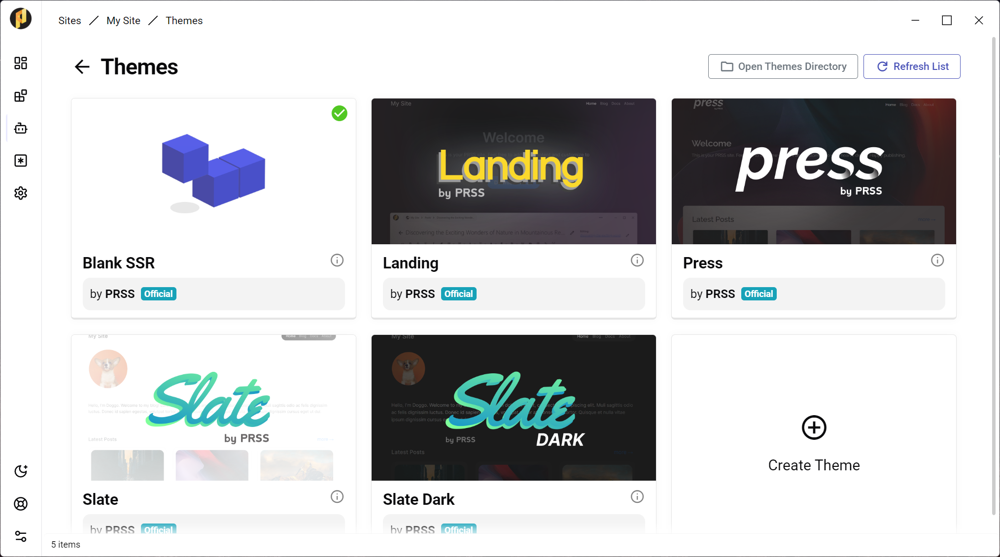
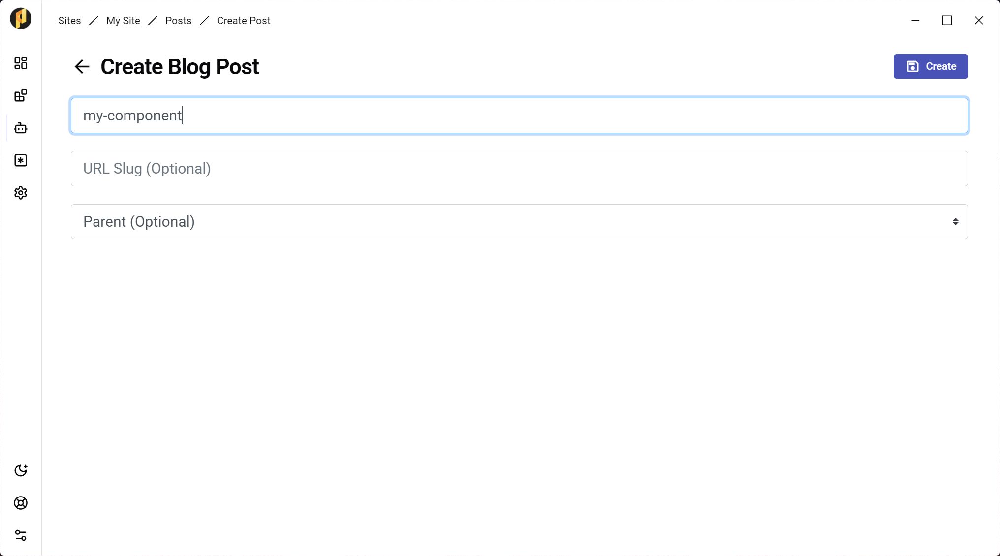
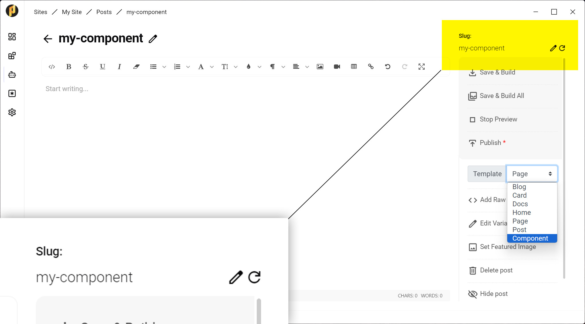
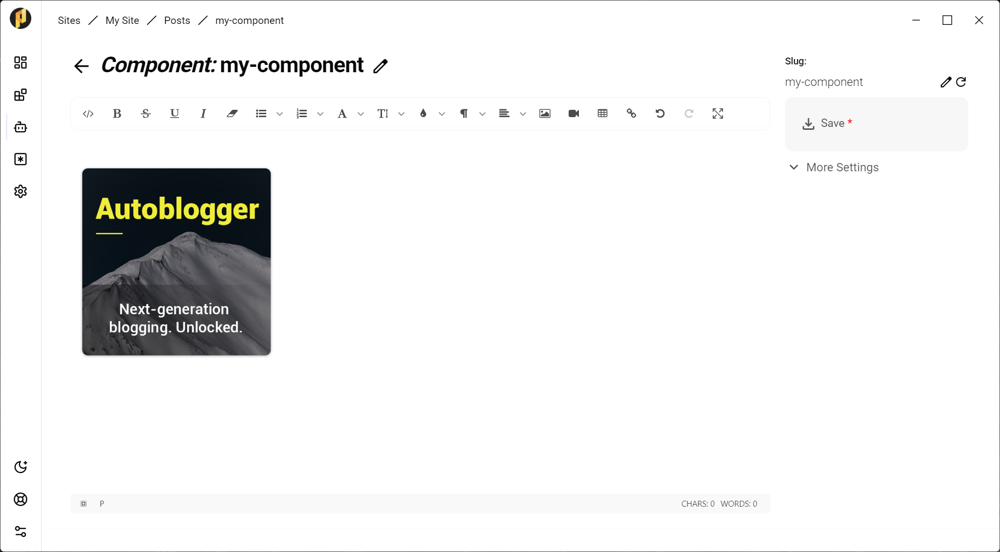
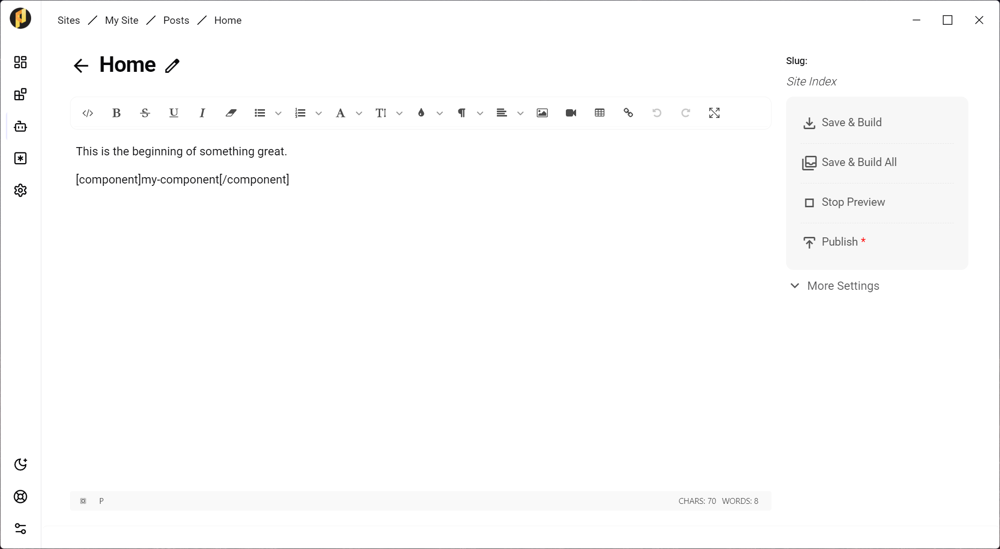
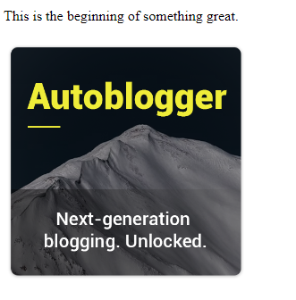
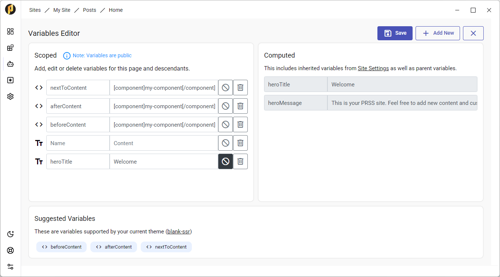

First, let's use the "Blank SSR" theme to build a site from scratch. Any other theme works as well
Create a new post on your site
In your new post, select "component" in the Template dropdown and Save the post. Take note of the "slug" value in your Post Editor. This will be the name of your component.
Make any edits as desired to your component, such as adding images, etc.
Add your component to your posts (or post variables) using the following shortcode:
[component]my-component[/component]
Preview your post. You will see the component loaded at the place the shortcode was added.
Blank Theme SSR only: If you would like for some components to repeat on several pages, use the "beforeContent", "afterContent" and "nextToContent" Variables (accessible in your Post Editor sidebar).
That's all! You can now add components to your posts.
Components are a powerful and easy feature to prevent duplication in your sites. Some things to note:
- You can edit the HTML code of the component and add Header and Footer HTML as you would with any post. Header HTML will be appended to the site's header. Footer HTML is appended, naturally, before the end of the document.
- You can also add component shortcodes as variables in your sites or posts. For example "asideHtml" in some themes is a spot where you can insert ads code to your post. You could add in a shortcode which will insert a component at that location.